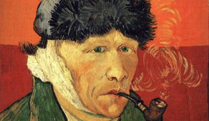
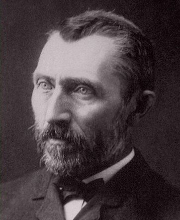
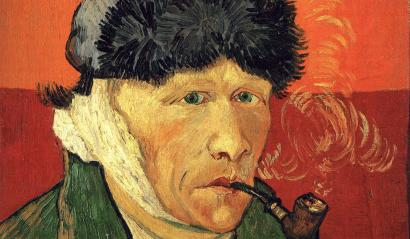
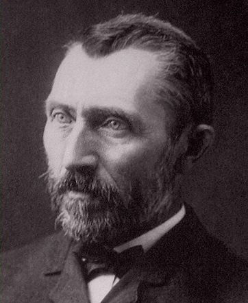

Vincent van Gogh
Vincent Willem van Gogh (30 March 1853 – 29 July 1890) was a Dutch Post-Impressionist painter who is among the most famous and influential figures in the history of Western art. In just over a decade he created about 2,100 artworks, including around 860 oil paintings, most of them in the last two years of his life. They include landscapes, still lifes, portraits and self-portraits, and are characterised by bold colours and dramatic, impulsive and expressive brushwork that contributed to the foundations of modern art. However, he was not commercially successful and his suicide at 37 followed years of mental illness and poverty.
Born into an upper-middle-class family, Van Gogh drew as a child and was serious, quiet and thoughtful. As a young man he worked as an art dealer, often travelling, but became depressed after he was transferred to London. He turned to religion and spent time as a Protestant missionary in southern Belgium. He drifted in ill health and solitude before taking up painting in 1881, having moved back home with his parents. His younger brother Theo supported him financially, and the two kept up a long correspondence by letter. His early works, mostly still lifes and depictions of peasant labourers, contain few signs of the vivid colour that distinguished his later work. In 1886, he moved to Paris, where he met members of the avant-garde, including Émile Bernard and Paul Gauguin, who were reacting against the Impressionist sensibility. As his work developed he created a new approach to still lifes and local landscapes. His paintings grew brighter in colour as he developed a style that became fully realised during his stay in Arles in the south of France in 1888. During this period he broadened his subject matter to include series of olive trees, wheat fields and sunflowers.
 


